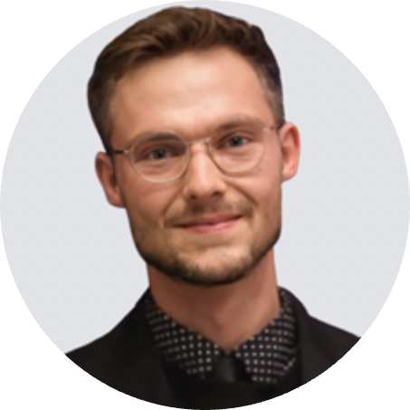

|  | Raymund Gabriel ten Broek, MScSports Scientist and Innovation Coordinator LinkedInContact |
|---|
I work as the embedded scientist at the Urban Sports Performance Centre (USPC) in Eindhoven, NL. My primary roles are project coordination for sports innovations specifically targeted at the advancement of "urban" sports such as skateboarding, BMX freestyle, free-running/parkour, and break-dancing. I work directly with Olympic Federations (SFN, KNWU, DFN) and their athletes. Additionally, I work with a diverse range of university students through various internships conducted at the USPC.
2018 - 2020 | Master of Science in Human Movement Sciences: Health & Rehabilitation
Maastricht University, Maastricht, NL
Cumulative GPA: 8/10
2013 - 2018 | Bachelor of Science in Health and Human Performance: Kinesiology
Montana State University, Bozeman, Montana, USA
Cumulative GPA: 3.67 / 4.00 | Major GPA: 3.73 / 4.00
100 Days of Code Bootcamp: Python, HTML, CSS, JS
2020 - Present: Embedded Scientist, Urban Sports Performance Centre
Eindhoven, NL
2017 - 2018: Student Assistant, Anatomy & Physiology Cadaver Laboratory
Bozeman, Montana, USA
2010 - 2021:Diverse range of side jobs | High school through post-graduate
USA & NL
2022 | Presenter | ERS Theta | Innovations in Sports
Eindhoven, NL
Presented several innovation projects that I was leading within the realm of urban sports.
2022 | Presenter | Dag Van Het Sport Onderzook (DSO)
Nijmegen, NL
Presented a pilot study titled Validation of Accelerometers to Measure Impact Forces In Skateboarding.
Discussing the importance of understanding and measuring high impact forces within the sport and the validation
of accelerometer use in skateboarding.
2022 | Panelist | 2nd Annual US Skateboard Education Association Summit
Online
Presented methods to reduce injuries, improve performance in skateboarding as well as improving skateboard
mechanics to improve the ollie
2021 | Panelist | 1st Annual US Skateboard Education Association Summit
Online
Presented the physics of the skateboard ollie to skateboard educators and professionals in the field
, as well as complex biomechanical topics to an audience outside the field of human movement sciences.
2019 | Best Debater: House of Commons Debate, Maastricht University
Certificate awarded by: Dr. Eugene Rameckers
2018 | Honors Graduation: Magna Cum Laude, Maastricht University
2015 | Presidents List for Academic Achievement, Montana State University
Highest achievement for GPA - Spring semester.
2012 | Worthy Student Scholarship, Bozeman High School
Nominated by high school faculty to win a scholarship toward higher education.
2018 - 2021 | President of the skateboarding committee, STOKED, Maastricht, NL
Participated in community outreach to increase knowledge and enhance skateboarding culture in the city of
Maastricht. Responsible for hosting weekly skateboarding lessons for the members of STOKED that were
interested in learning or advancing their skills. Responsible for planning skateboarding related events and
trips and carrying communication between committees.
Native: English
Secondary: Dutch (B2)
American, Dutch